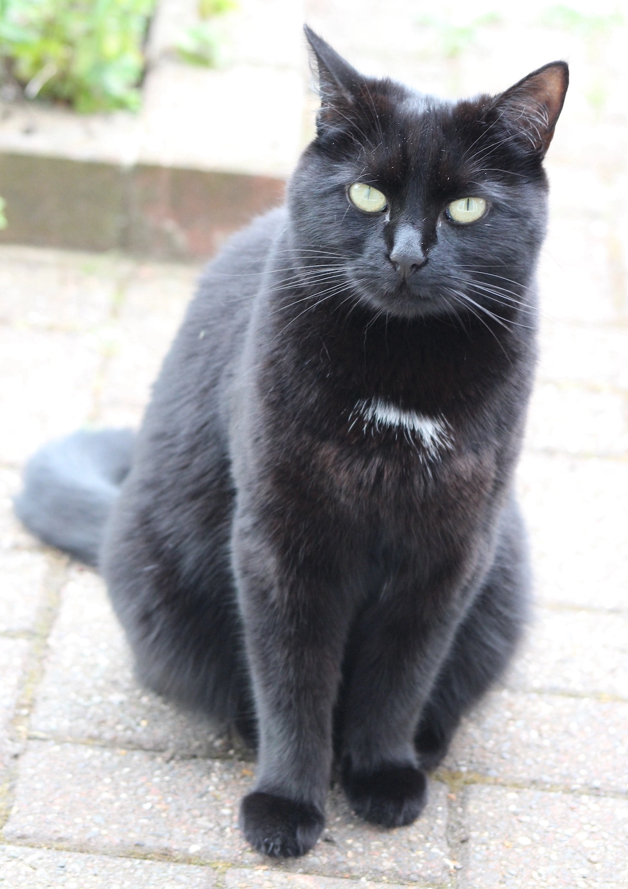

Gardening at Night
[Jak]: You caused a bit of worry the other day.
[Nikita]: We were tired out having to get up and look out of the window for you, and run around the garden in case you were there, and...
[Kuma]: You know I wouldn't be in the garden if you were out there. Not where you'd see me, of course. Anyway, why were you worried?
[Jak]: I didn't say we were worried. Our humans were concerned about you. You were missing for a whole day. They thought you'd run off again or got run over or...
[Nikita]: Has she run away?
[Jak]: Not from here. Don't distract me, Nikki. We want to know why you didn't come home as usual.
[Nikita]: And can we have your meals next time?
[Jak]: Nikki!
[Kuma]: I have places to go, cats to see. I don't need to hang out with you losers all the time.
[Jak]: Come on...Nikki saw you in the flower bed sampling the cat nip.
[Kuma]: Yes, well, it'd be churlish not to take advantage now those humans have planted some greenery for me. I might have over-indulged. And it was so hot and so bright. I had to lie low for a bit. And didn't really fancy the same old dish of food those humans offer me.
[Nikita]: I had a look in the flower bed too. The plants didn't do anything for me.
[Jak]: That's why it's called catnip. It didn't do much for the plants either as you came crashing down through them!
[Jak]: Is that where you hide in the garden then, Kuma?
[Kuma]: I don't need to go to so much trouble to avoid you, Dozy!
[Nikita]: Why don't the humans plant nice things for us?
[Jak]: We're dogs, Nikki. We don't want to eat anything out of the garden...unless it was a cat!
[Kuma]: Charming! It'd be too fresh and nice out of the garden. I've seen the pair of you chowing down on dirty weeds growing out of the pavement.
[Jak]: Well, I admit we do take in a bit of grass from time to time to aid our digestion.
[Kuma]: Check with your pal, she doesn't just eat the green, wobbly bits. Anything goes for her, dried up, trodden on...
[Jak]: Nikki!